Nosso elenco
21 atletas representados no Brasil, no México e nos Emirados Árabes Unidos. Toque em uma carta para abrir a ficha completa.
Profissionais e base em clube 18
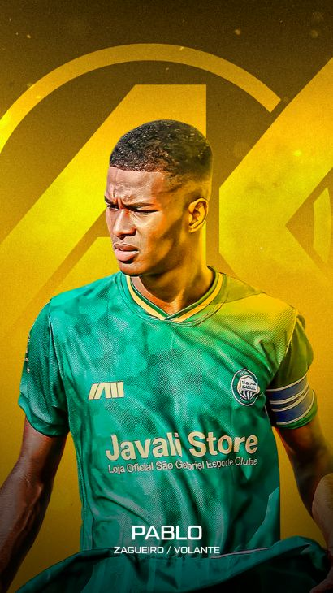
Pablo SantosVolante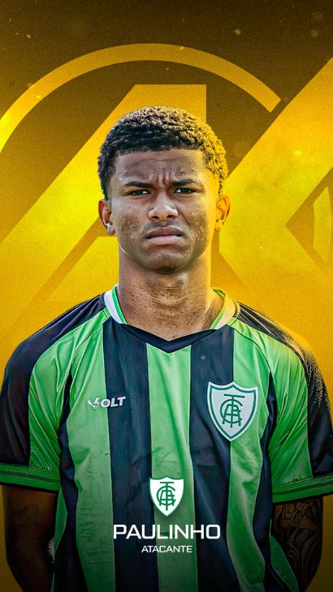
PaulinhoMeia-atacante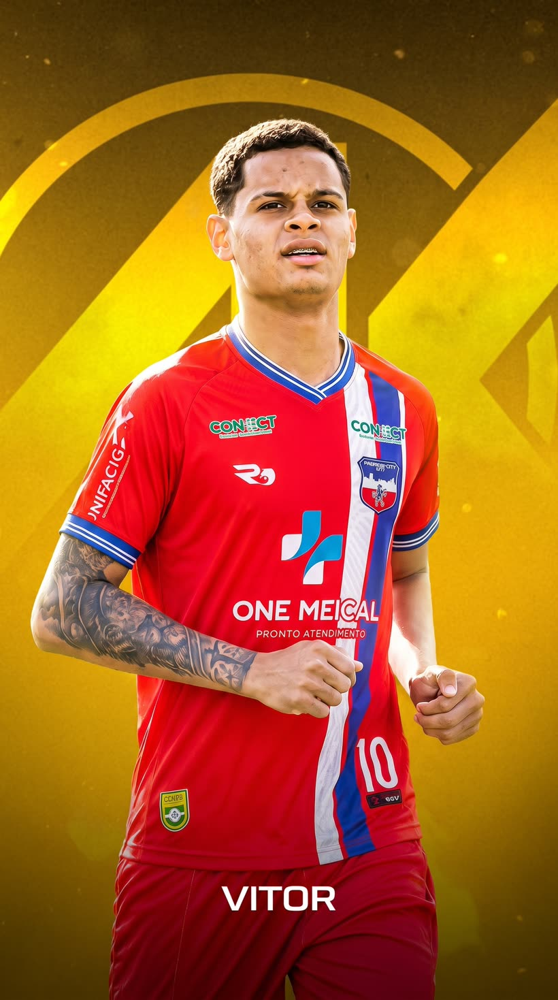
Vitor JovinoAtacante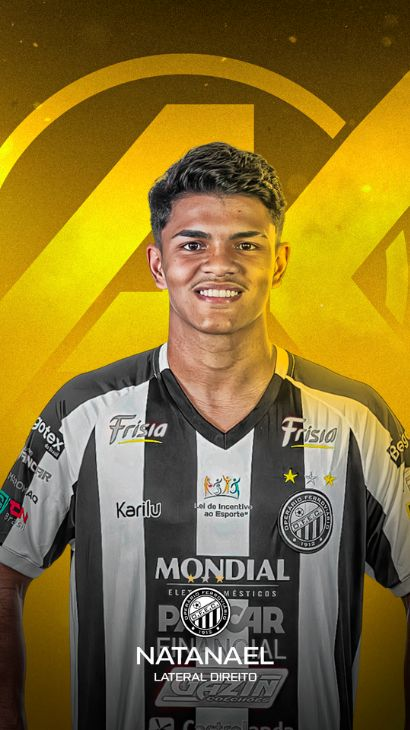
Natanael JrLateral-direito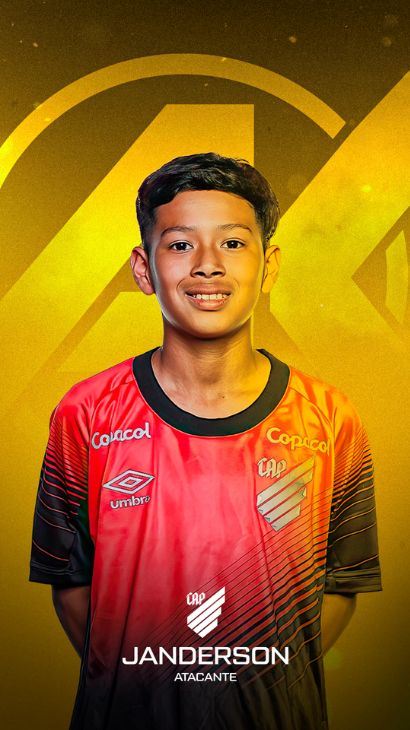
Janderson JrAtacante · Base João ChuttiZagueiro
João ChuttiZagueiro
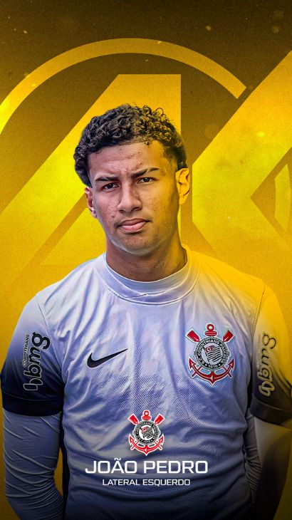
João PedroAtacante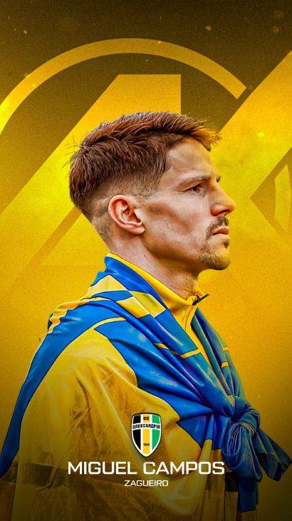
Miguel CamposZagueiro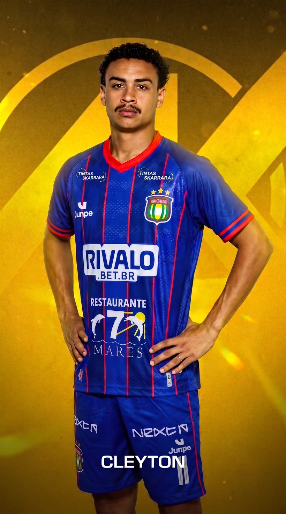
Cleyton MatheusLateral-esquerdo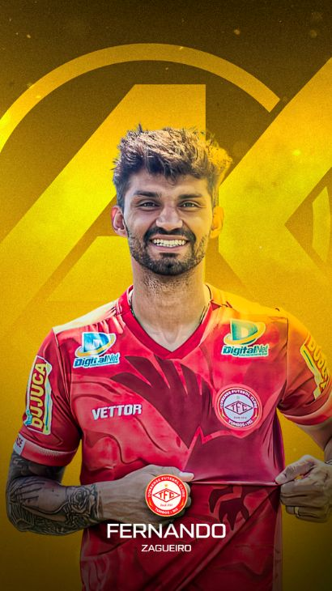
Fernando FonsecaZagueiro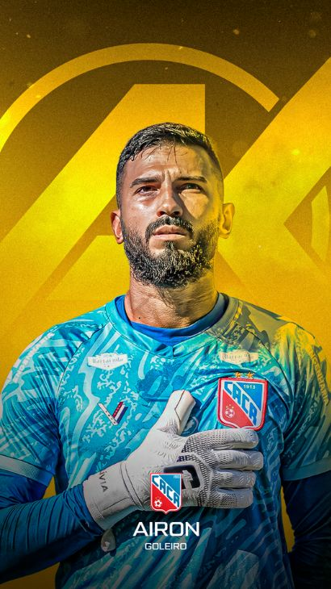
Airon SantosGoleiro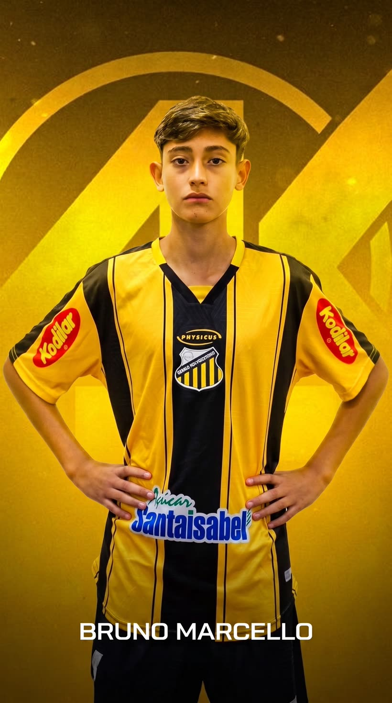
Bruno MarcelloZagueiro · Base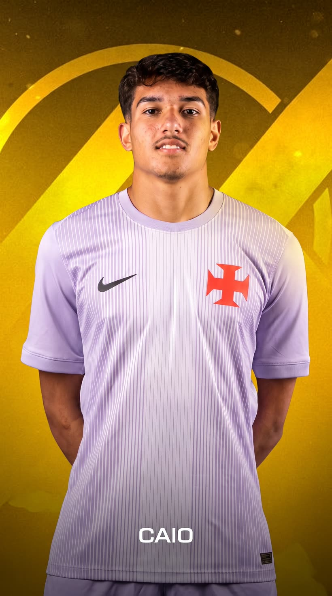
Caio VandaleteGoleiro · Base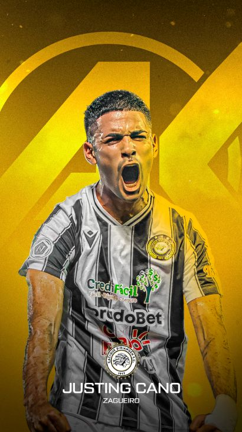
Justin CanoZagueiro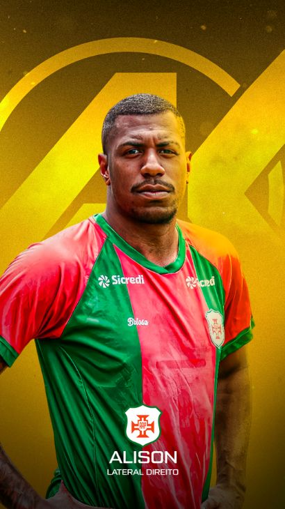
Alison RodrigoLateral-direito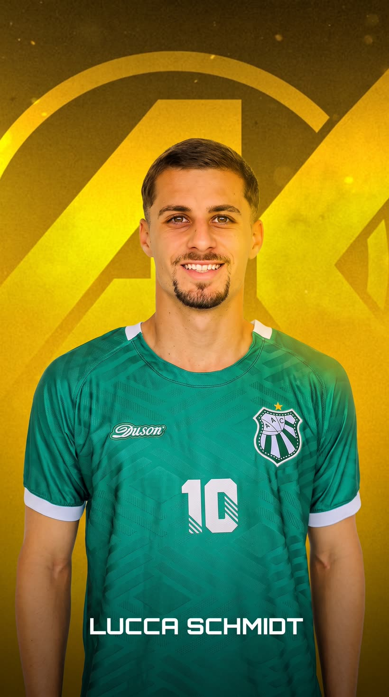
Lucca SchmidtLateral-esquerdo João VictorGoleiro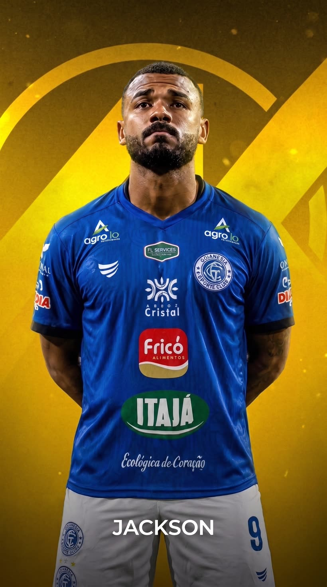
JacksonAtacante